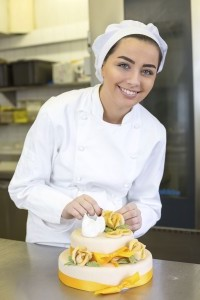

About Audrey
In 2003, I went to culinary school to become a cake designer. This decision was spurred after my son was diagnosed with a milk allergy, and I couldn’t find a lactose-free cake he could have for his second birthday. As a result, I did the research and made one myself. I wanted to make it special and give it a personal touch that reflected his interests, so I took a cake decorating class at a local community center and learned the basics of using fondant. With the skills I acquired, I made him a rocket ship cake that we’ll never forget. It took me an entire day to carefully craft his cake, and while I still had far to go in developing my talents, I discovered I loved designing cakes! And the rest is history.
I’ve been creating custom cakes for 11 years, and during that time I’ve won four “Best Local Wedding Cakes” awards from Our Home City News. Some of my designs have been featured in national publications and wedding registries throughout the county.
Designing cakes for my clients is my passion. Whether it’s a fun animal cake for a birthday, a traditional wedding cake, or a corporate cake to celebrate an achievement, I’m excited to help you create the cake of your dreams!